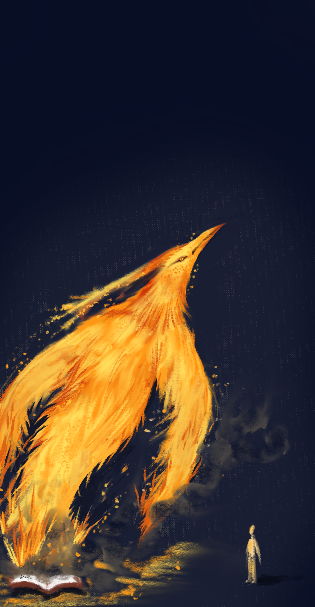

Submission Guidelines
Submissions are accepted on a rolling basis. Writers and artists from around the world are welcome to submit their work to Bunny Tales. We are looking for pieces that encourage creativity, literacy, curiosity, and meaningful engagement with the world. Topics can include but are not limited to…
Science · History · Environment · Mental health · Culture · Social issues · Economics · Technology · Philosophy

Science · History · Environment · Mental health · Culture · Social issues · Economics · Technology · Philosophy
Accepted forms
Formatting
Length
1–15 pages.
Submission
Submit through our Google Form. Submit now
Audience
Writing should be accessible and comprehensible to youth ages 3–17.
Content
We encourage work that can explore depth, vulnerability, authenticity, and difficult subjects while avoiding gratuitous vulgarity, graphic violence, or gore.
Accepted mediums
Any art piece that can be fully displayed in a still, digitally submitted image will work!
Audience
Artwork should be appropriate and accessible for youth ages 3–17.
Content
We encourage meaningful, authentic, and emotionally complex work while asking artists to avoid gratuitous vulgarity, graphic violence, or gore.
Formatting
Submission
Submit through our Google Form. Submit now
If you have a question about the guidelines or want feedback before you submit, we're happy to help.
Contact us